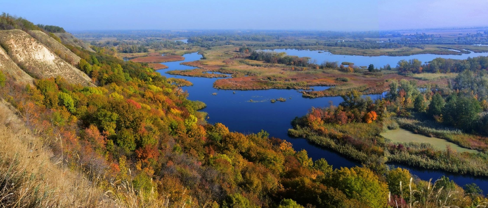
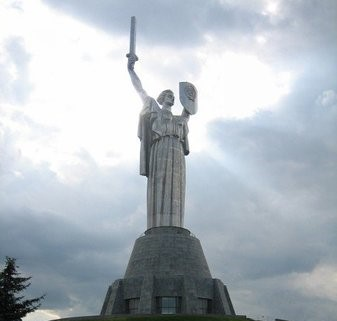
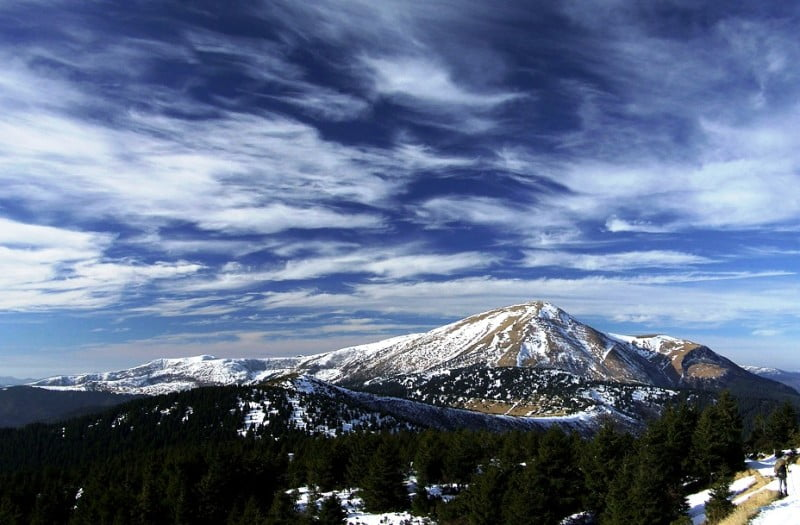
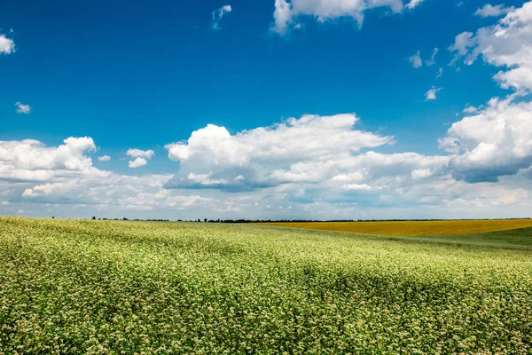

Моя Батьківщина

Це річка Ворскла, де я часто проводив дитинство.

Це історичний монумент, який є символом нашого краю.

Неповторні краєвиди гір — гордість нашого краю.

Широкі поля з золотистою пшеницею.